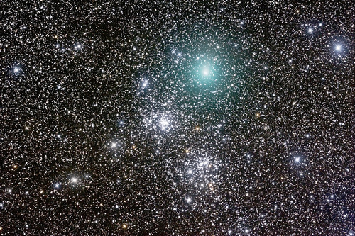

A Question of Scale
The universe is over 150 billion light years in diameter and constantly expanding, which makes that a pretty much meaningless observation. For comparison, I am approximately (1.933 x [10^-16]) light years tall. Thankfully I am not constantly expanding.
The universe is approximately 13.7 billion years old. I am approximately 21 years old at the time of writing. As you can see, the universe is much bigger and older than I am, but we have somethings in common. We are both going to die one day. I am going to die because my cells are getting steadily worse at replicating themselves, the universe is being slowly murdered by the second law of thermodynamics.

“In the beginning there was nothing. Which exploded.”
Sometimes folks get really uppity about the size of the universe, they’re all like, “Man the universe is so big and massive and uncaring, what the hell is the point in even being a thing? It’s like the whole of human existence has been to make the point that human existence is pointless ‘cause look how massive everything else is! How the hell are we supposed to matter when we barely even register? We’re just like a little fleck of spittle on the windscreen of the universe as it barrels past below on the motorway of existence.”